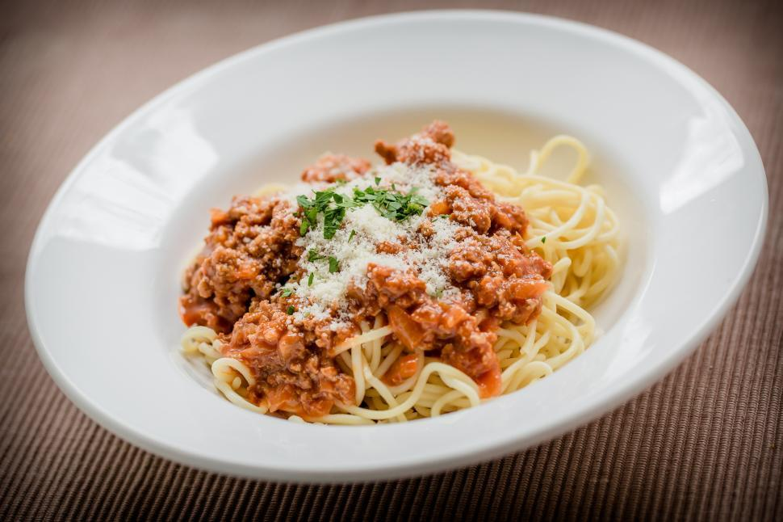

Bolognese Sauce
Home

Description
A simple Bolognese sauce recipe with ground beef and pork.
Ingredients
- 2 tablespoons olive oil
- 1 large onion, minced
- 2 carrots, chopped
- 3-4 stalk celery, chopped
- 300g ground beef
- 300g ground pork
- 1 can passata or peeled Italian plum tomatoes
- 1 tablespoon tomate paste
- 1/2 cup dry white wine
- 1/2 cup milk
- fresh basil leaves
- salt and pepper to taste
Steps
- Warm oil in a deep pan or pot over medium heat.
Sauté onion, carrots, and celery in hot oil for about 10 minutes.
Add a 1/4 cup of white wine.
- Add ground beef and pork. Cook until browned and crumbly, also about 10 minutes.
Lightly season the mixture. Add the remaining wine.
- Add a tablespoon of tomato paste and canned tomatoes. Stir everything together.
Add water. Bring the sauce to boil. Cover, reduce heat, and simmer sauce
for 3-4 hours, stirring occasionally. Keep adding more water as it evaporates.
- At the end, add your milk and stir.
Add salt and pepper to taste and whole basil leaves.